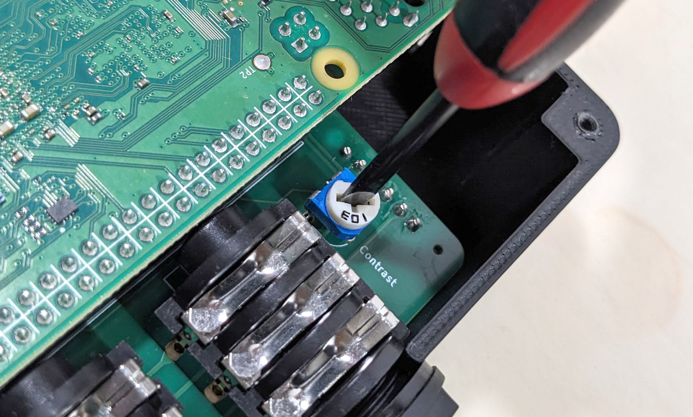
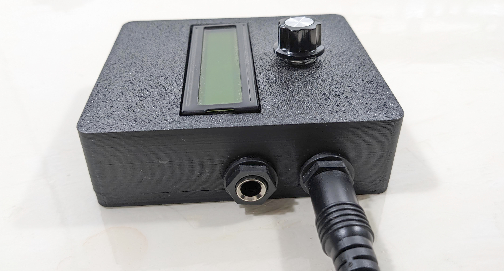
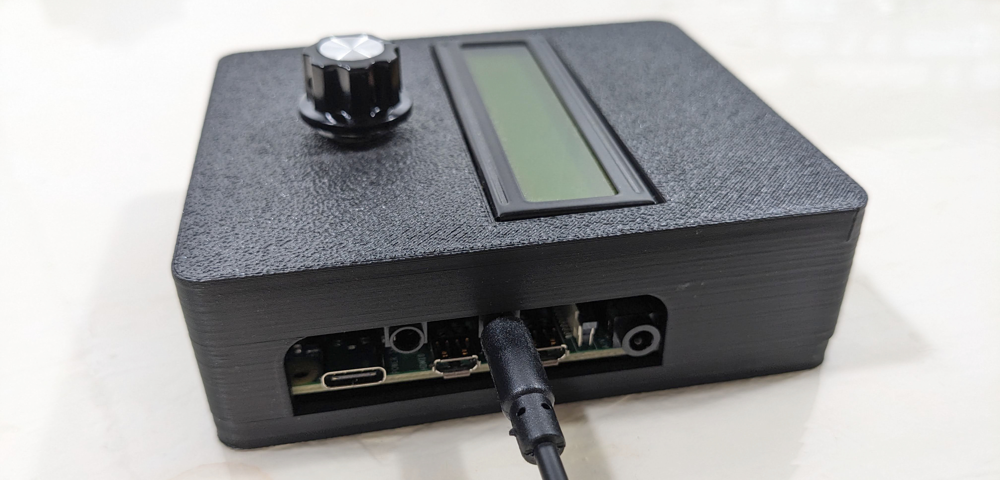

User Guide¶
When powered on, the SquishBox starts a launcher that allows you to run applications, browse tools, or modify system settings.
Navigation is designed to be simple and usable without a keyboard or display larger than the built-in LCD.
Basic Controls¶
The primary control is the pushbutton rotary encoder.
Turn the encoder to move through menus or adjust values
Tap the encoder to confirm a selection
Press and hold the encoder to cancel, go back, or exit the current screen
Most built-in applications follow this same control scheme.
Text Entry¶
The SquishBox includes an on-screen text entry mode for naming files, editing settings, and entering text without a keyboard.
Pressing the encoder toggles between two cursor modes:
Blinking block cursor — Move the cursor position by turning the encoder
Blinking underline cursor — Change the current character by turning the encoder
This allows text to be entered entirely from the front panel.
If a USB or wireless keyboard is connected to the Raspberry Pi, keyboard input is also accepted anywhere text entry is available.
Safe Shutdown¶
To safely power down the system before disconnecting power, choose Shutdown from the Exit menu.
This helps prevent filesystem corruption or SD card damage.
Hardware Controls and Connections¶
Display Contrast Adjustment¶
The LCD contrast trimmer is accessible with the Raspberry Pi installed and the rear cover removed.
Use a small screwdriver to adjust the trimmer for the best display clarity.
Contrast is controlled by both:
The hardware trimmer potentiometer
Software contrast settings
For best results, install the software first, then adjust the trimmer so the software setting has a useful adjustment range.

Adjustment of hardware contrast¶
Audio Outputs¶
The SquishBox provides two 1/4” audio output jacks.
Physical orientation:
Rear jack = Left / Headphone output
Front jack = Right / Mono output
(When viewed face-on, these appear on the left and right sides respectively.)
Behavior:
If only the Right / Mono jack is connected, left and right channels are summed to mono on that output.
If only the Left / Headphone jack is connected, stereo audio is routed to the tip and sleeve of a TRS connector for headphone use.
The PCB silkscreen also labels both jacks.

Audio ports in mono connection mode¶
MIDI TRS Ports¶
The SquishBox includes MIDI input and output on 3.5 mm TRS minijacks.
Physical orientation:
Front jack = MIDI Out
Rear jack = MIDI In
(When viewed from the front, these appear on the left and right sides respectively.)
The PCB silkscreen also identifies each port.
Headers with jumper blocks allow the MIDI jacks to be configured for either TRS MIDI wiring standard:
Type A = horizontal jumper position ( = )
Type B = vertical jumper position ( ‖ )
Set both jumpers to match the equipment you are connecting.

Connection to MIDI IN minijack¶
Included Apps¶
The included applications serve two purposes:
Fully supported tools and audio programs for daily use
Reference examples for developers using the SquishBox Python API
Bug reports and feature requests can be submitted through the project GitHub issue tracker.
Utilities¶
launcher.pyMain launcher used to start applications and access system settings.
sbedit.pyLightweight text editor that supports both encoder input and keyboards.
glyphedit.pyUtility for creating and editing custom LCD glyph characters.
sbcommander.pyFile manager for copying, moving, renaming, deleting files, and running shell commands.
Sound Programs¶
fpatcherbox.pyFlexible synth and sound module built around the FluidSynth engine using the FluidPatcher Python package.
amsynthbox.pyFront-end wrapper for the amsynth analog-modeling synthesizer.
trackbox.pyPlaylist-based music player with live track reordering and quick cuts.